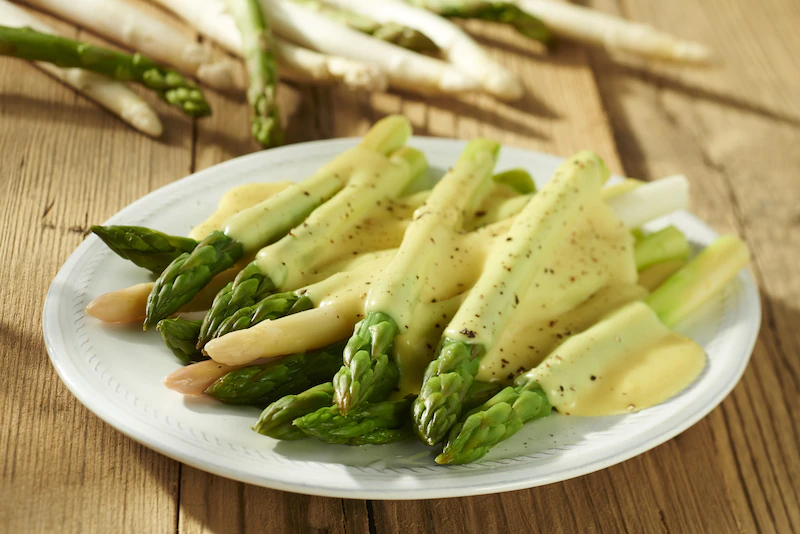

Szparagi z sosem

Opis
Jedyne takie szparagi z sosem!
- szparagi
- jajka
- bulion warzywny knorr
- maslo klarowane
- cukier
- swiezo mielony bialy pieprz
- sok z 1 cytryny
- Szparagi umyj, odetnij zdrewniałe końcówki, resztę szparagów obierz. W garnku nastaw doprawioną solą i cukrem wodę. Gdy woda zacznie się gotować, włóż do niej szparagi, gotuj zielone około 4 minut, a białe około 6 minut.
- Przygotuj sos: będziesz potrzebował trzepaczkę, garnek i metalową miskę o średnicy nieco większej niż garnek.
- Klarowane masło rozgrzej do temperatury około 60 stopni. Ma być ciepłe, nie gorące. W odpowiednim garnku zagotuj wodę. Do miski wbij żółtko jajek, dodaj cukier , kostkę rosołową, sok z cytryny. Miskę umieść na garnku, w kąpieli parowej. Powoli dodając masło, ucieraj je energicznie mieszając z żółtkami. Kontroluj przy tym temperaturę, gdyż w zbyt wysokiej jajka się po prostu zetną.
- Masło dodawaj do momentu, aż sos stanie się puszysty i zgęstnieje. Przełóż go wtedy do miski, dopraw białym pieprzem. Ugotowane szparagi podawaj polane sosem.